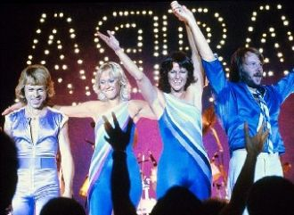

Она любила его так неистово. Она придумала свой идеал. Она жила его звонками и письмами. А он играл.
Я долго думал, кто же мыПросто пешки на доске или игрокиНо в вечном поиске любвиТак часто падали и мир на грани войны
И в красное восход. И блики на стекле. Привет, доброе утро. Открой настежь все окна. И пой, мне ветер, свою песню.
I threw a wish in the wellDon't ask me I'll never tellI looked at you as it fellAnd now you're in my way
[Rihanna]Yellow diamonds in the lightAnd we're standing side by sideAs your shadow crosses mineWhat it takes to come alive
You think I'm pretty, without any make-up onYou think I'm funny, when I tell the punchline wrongI know you get me, so I let my walls come downDown
You change your mindLike a girl changes clothes.Yeah, you, PMSLike a bitchI would knowAnd you over thinkAlways speak
Oh, no.
[Juicy J:]YeahYa'll know what it isKaty PerryJuicy J, aha.Let's rage
Опять одна, ты опять одна,Ты ждёшь звонка, дрожа слегка,Твой телефон смотрит сладкий сон,А ты одна, совсем одна,И ты глядишь по ночам в окно,
Party rockYeahWhoa!Let's go!
When I met you in the summerTo my heartbeat soundWe fell in loveAs the leaves turned brown
There's rain on my windowBut I'm thinking of youTears on my pillowBut I will come through
la verite tu la sait c'est que les blancs ne savent pas danser le seul blanc qui sait danser c'est mickael jackson
REFRAIN

In the night a new day dawningAnd the first birds start to singIn the pale light of the morningNothing's worth remembering
Откровенная летняя пропаганда.Для вас Потап и его команда!Три припева, два куплета,Эта песня про это лето.Про это летоПро это лето
Вот и лето прошло,Словно и не бывало.На пригреве тепло,Только этого мало.
На огромном небе звезд невидимо.Посмотри на мир наш удивительный!Это наше небо, наша Родина!Во Вселенной мы не посторонние.
В этом городе я знаю пути. Знаю тех, кто мне мешает идти.Каждый шаг, каждый мир по кольцу и в час пик.
Слезы - это соль, а потом вода.Под конвоем время ведет куда?Две любви прошли где-то стороной.И не хочешь третьей любви такойЭй..
Я бы хотела, тебя послушать. Садись поближе, и дай мне хороший совет. Откуда взялся, на мою душу. Я не знаю, но не спасает, меня твой амулет.